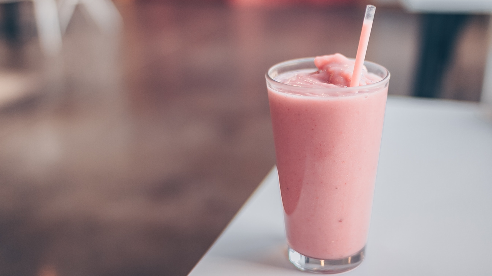

← Back to Recipe Book
Strawberry Milkshake
Creamy strawberry milkshake

Prep Time
10 mins
Yield
4
Ingredients
- 8 ounces strawberries, stemmed and sliced
- 1/2 teaspoon vanilla extract
- 1 pint vanilla ice cream
- 1/4 cup milk
Steps
-
Blend half of strawberries, 1/4 tsp.
vanilla, 1 cup ice cream and 2 Tbsp.
milk in blender until smooth.
-
Pour into 2 glasses. Repeat with
remaining strawberries, vanilla,
ice cream and milk. Serve immediately.